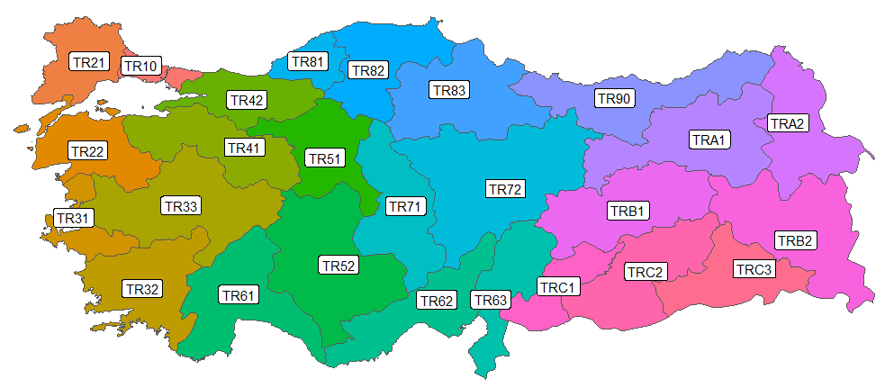
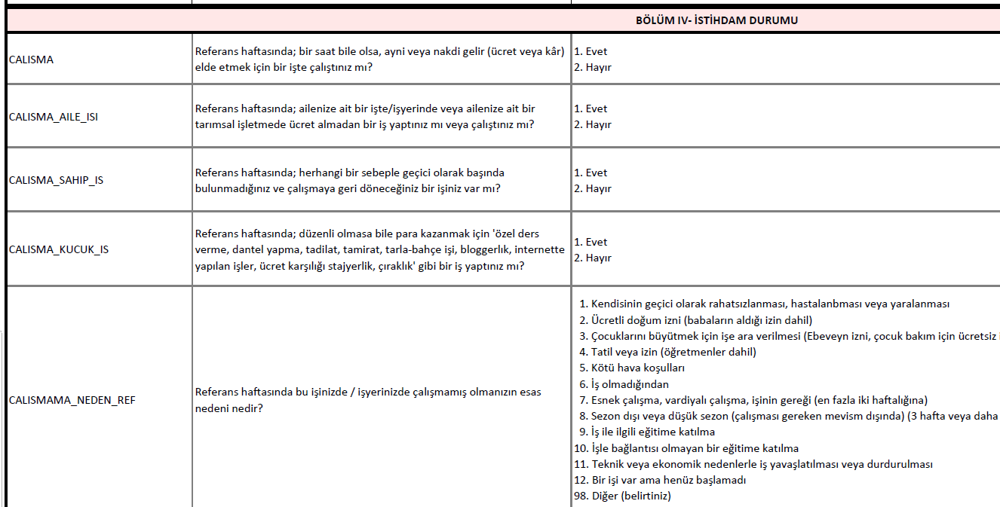
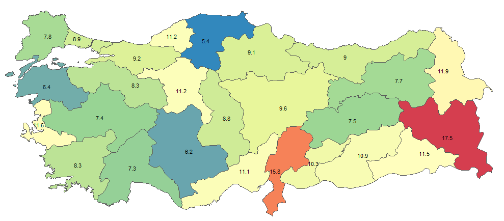
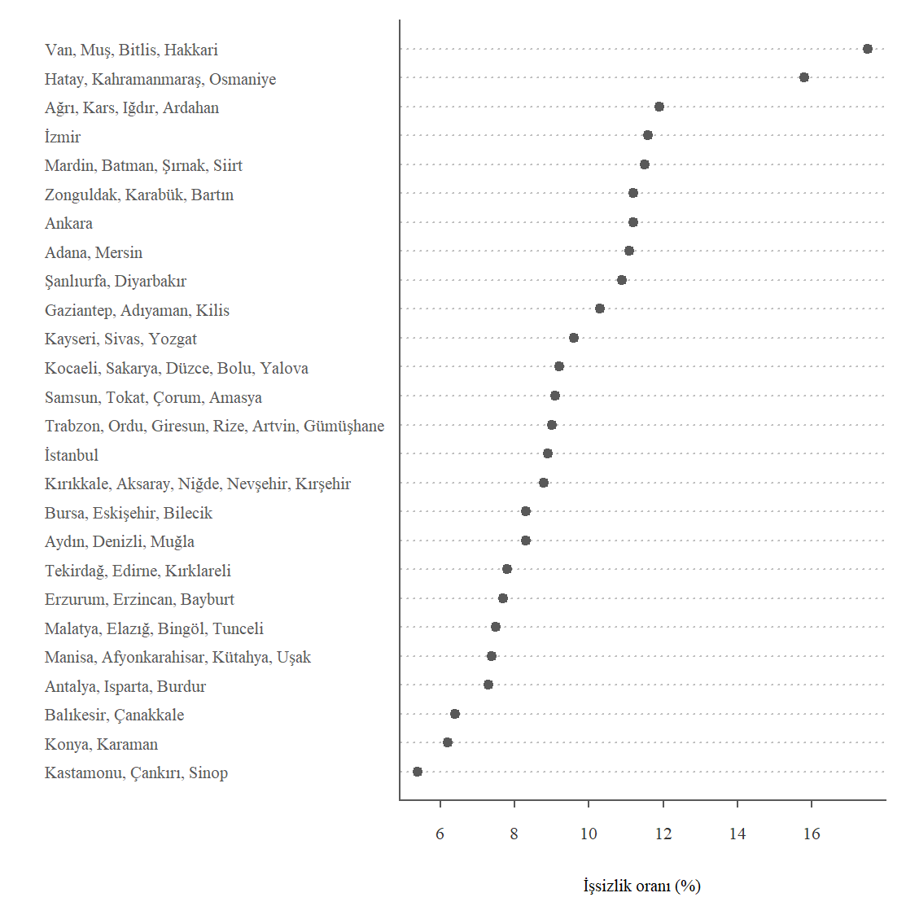
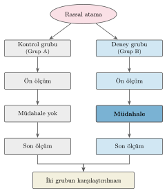
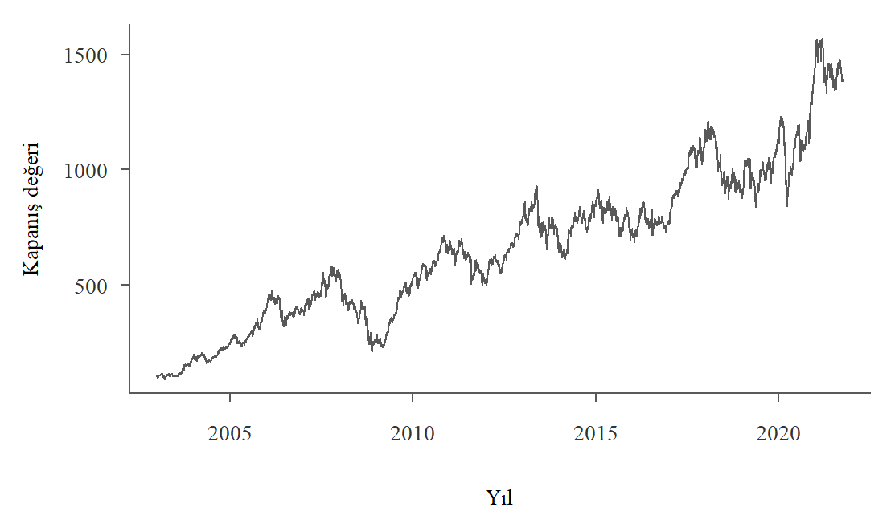
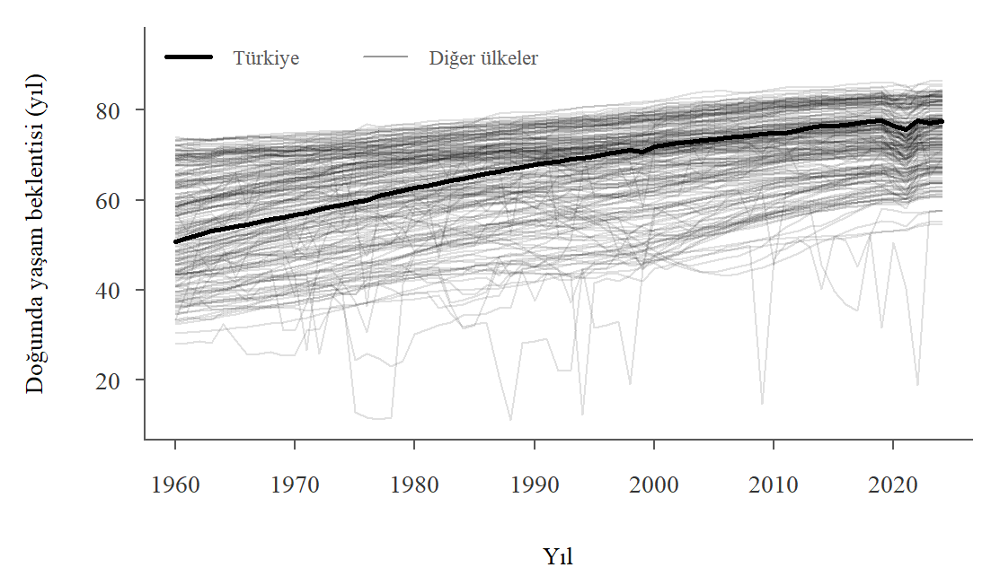

load("Data/hane_anakutle.RData")
load("Data/hane_ornek.RData")
c(anakutle = nrow(hane_anakutle), orneklem = nrow(hane_ornek))anakutle orneklem
20000 400 Bu bölümün amacı.
Giriş bölümünde (bkz. Bölüm 1) elimizdeki veriyi özetleyen betimsel istatistik ile veriden hareketle onun geldiği daha büyük kitle hakkında sonuç çıkaran çıkarımsal istatistiği birbirinden ayırmıştık.1
Bu bölümde önce bu ayrımın dayandığı kavramları tanımlayacağız. Ardından, izleyen üç bölümdeki özetleme araçlarını kullanmadan önce yanıtlanması gereken bazı soruları ele alacağız. Betimsel istatistik araçlarını kullanabilmemiz için verinin nereden geldiğini ve nasıl elde edildiğini, verinin türünü, veride yer alan değişkenlerin özelliklerini ve ölçüm düzeylerini bilmemiz gerekir.
Bir veri kümesi ilgilendiğimiz birimlere ilişkin ölçümlerden ya da kayıtlardan oluşur. Gözlem birimi kişi, hanehalkı, tüketici, firma, şehir, bölge, ülke vb olabilir. Pratikte karşılaştığımız veri kümeleri, tüm birimlerin verilerini içeren bir anakütle ya da bu birimlerin belirli bir kısmını (alt kümesini) kapsayan bir örneklem olabilir.
Tanım 3.1 (Anakütle (popülasyon, evren)) Araştırma yapılan birim ya da nesnelere ilişkin eksiksiz veri kümesine anakütle (ya da evren/popülasyon) adı verilir. Anakütleyi araştırma sorusu belirler.
Bir ülke ya da şehirdeki tüm hanehalkları, bir üniversitedeki tüm öğrenciler, bir endüstrideki tüm çalışanlar ya da bir fabrikada bir günde üretilen tüm ürünler anakütleyi oluşturabilir. Anakütleyi belirleyen şey büyüklüğü değil, araştırma sorusudur. Bir dersteki 40 öğrencinin tamamıyla ilgileniyorsak anakütlemiz 40 birimdir. Anakütle küçük ve tümüyle gözlenebiliyorsa örnekleme gerek kalmaz. Anakütleye ilişkin her sayı doğrudan hesaplanabilir. Ama anakütle çoğu zaman çok büyüktür ve her birimi gözlemek zor ya da çok pahalıdır. Bu durumda birimlerin tamamı yerine anakütlenin bir alt kümesi olan örneklem ile çalışırız.
Tanım 3.2 (Parametre) Anakütleyi tanımlayan ve anakütlenin belirli bir özelliğine ilişkin bilgi içeren sabit değerlere parametre denir. Örneğin, Türkiye’deki tüm hanehalklarının ortalama geliri bir parametredir. Bir fabrikanın tüm ürünlerinin ortalama ağırlığı veya bir okuldaki tüm öğrencilerin başarı ortalaması birer parametredir.
Anakütle gözlenemiyorsa bu parametreler hesaplanamaz. Bu durumda parametreler hakkında bilgi edinmenin yolu anakütlenin bir alt kümesini gözlemektir.
Tanım 3.3 (Örneklem) Anakütle hakkında bilgi edinmek amacıyla belirli yöntemlerle seçilen anakütlenin bir alt kümesine örneklem (sample) adı verilir.
Örneklem anakütleden daha küçük olduğu için bilgi toplamak daha kolay ve ucuzdur. Bir şehirde yaşayan tüm hanelere ulaşmak yerine, bu anakütleyi temsil edebilen 500 gözlemli bir örneklem oluşturulabilir. Toplam öğrenci sayısı 40000 olan bir üniversitede, tesadüfi olarak seçilmiş 100 öğrenciden oluşan bir örneklem kullanılarak çıkarım ve genellemeler yapılabilir.
Tanım 3.4 (İstatistik) Örneklemden hareketle hesaplanan değerlere istatistik denir. İstatistiklerin başlıca kullanımı anakütle parametrelerini tahmin etmektir. Örneğin, bir şehirdeki rassal seçilmiş 1000 hanehalkının ortalama geliri, bir üniversitedeki 200 öğrencinin ortalama notu veya bir fabrikada üretilen 500 ürünün ortalama ağırlığı birer istatistiktir.
Anakütle ve örneklem arasındaki karşılıklar Tablo 3.1 ile özetlenmiştir.
| Anakütle | Örneklem | |
|---|---|---|
| Büyüklük | \(N\) birim | \(n\) birim, \(n<N\) |
| Gözlenebilirlik | çoğu zaman gözlenemez | gözlenir |
| Özet ölçüsü | parametre, sabit ve genellikle bilinmeyen | istatistik, örneklemden hesaplanır |
| Ortalama | \(\mu\) | \(\bar{x}\) |
| Varyans | \(\sigma^2\) | \(s^2\) |
| Standart sapma | \(\sigma\) | \(s\) |
| Oran | \(p\) | \(\hat{p}\) |
Çıkarım tabloda sağdan sola işler. Örneklemden hesapladığımız istatistikleri kullanarak anakütlenin bilinmeyen parametreleri hakkında sonuç çıkarabiliriz.
Parametre ile istatistik birbirine karıştırılmamalıdır. Aralarındaki fark yalnızca hesaplandıkları kümenin farklı olması değildir.
Parametre sabittir. Anakütle ortalaması \(\mu\) belirli bir sayıdır. Bilmiyor olabiliriz, ama değişmez.
İstatistik sabit değildir. Örneklem ortalaması \(\bar{x}\) hangi örneklemin çekildiğine bağlıdır. Aynı anakütleden başka bir örneklem çekseydik başka bir değer bulurduk. Bu yüzden istatistikleri birer rassal değişken olarak düşünürüz. Bu tür değişkenlerin davranışını anlayabilmek için olasılık kuramına ihtiyaç duyulur.
Bu ayrım kitabın geri kalanının dayanağını oluşturmaktadır. Örneğin, elimizdeki tek bir örneklem ortalaması \(\bar{x}\) değerinin çekilen örnekleme göre ne kadar oynadığını hesaplamak ve buradan anakütle ortalaması \(\mu\) hakkında ne söylenebileceğine karar vermemiz gerekir. Bunu nasıl yapabileceğimizi Kısım II’de detaylı olarak göreceğiz.
Örneklemden anakütleye güvenilir genelleme yapabilmek için örneklemin anakütleyi temsil etmesi, yani anakütlenin özelliklerini doğru yansıtması gerekir. Temsil gücünü belirleyen, örneklemin büyüklüğünden çok nasıl seçildiğidir.2
Örneklem büyüklüğü ile örneklemin temsil gücü iki ayrı şeydir ve büyüklük ikincisini telafi etmez.
Örnekleme yöntemi belirli birimlerin seçilme şansını sistematik olarak artırıyorsa sonuç yanlı olur. Bu yanlılık örneklem büyüdükçe küçülmez, olduğu yerde kalır. Değişen tek şey, yanlış sonuca daha dar bir güven aralığıyla, yani daha büyük bir kesinlik iddiasıyla varmamızdır.
Örneğin, bir kentteki ortalama hane gelirini tahmin etmek için yalnızca kredi kartı sahiplerine ulaştığımızı düşünelim. Böylece 500 kişi yerine banka kayıtlarından 50000 kişiye ulaşmamız yapacağımız tahmini düzeltmez. Kredi kartı olmayan haneler örnekleme hiç girmediği için elimizdeki ortalama gelir yüksek çıkabilir. Üstelik artık bu yüksek değerin çevresindeki belirsizlik daha küçüktür. Sonuç olarak elde ettiğimiz bulgular şehrin tümüne genellenemez.
Kısacası örneklem büyüklüğü belirsizliği azaltırken yanlılığı azaltmayabilir. Yanlılığın tek çaresi örnekleme yönteminin kendisini düzeltmektir.
Şimdiye kadar anakütleyi, bir şehirdeki haneler, bir üniversitedeki öğrenciler ya da bir ülkedeki bireyler gibi listesi yapılabilen birimlerin tamamı olarak düşündük. Her veri ya da araştırma sorusu bu kalıba uymaz.
Bu örneklerde veriyi, tekrar tekrar işleyebilen bir mekanizmanın ürettiğini düşünürüz. Bu mekanizma zarın fiziksel yapısı, makinenin ayarı ve oynaklığı ya da piyasadaki alım satım kararları olabilir. Gözlenen verileri üreten bu mekanizmaya veri üreten süreç (data generating process) denir. Elimizdeki veri, sürecin şimdiye kadar ürettiği sonuçlardır. Süreç ise ilgilendiğimiz anakütlenin yerini alır. Hilesiz bir zarda 6 gelme olasılığı, makinenin paketlere koyduğu ortalama miktar ya da getirilerin standart sapması gibi parametreler de sürecin özellikleridir.
Dünyadaki ülkeler iyi bir örnektir. Bütün ülkelere ait bir göstergeyle “yaşam süresi en uzun ülke hangisi?” diye soruyorsak elimizdeki veri anakütlenin kendisidir. Bu verileri izleyen bölümlerde göreceğimiz yöntemlerle betimleyebiliriz. Aynı veriyle “kişi başına gelir arttıkça yaşam süresi nasıl değişir?” diye soruyorsak ilgilendiğimiz şey bu ülkelere özgü sayılar değil, gelir ile yaşam süresi arasındaki ilişkiyi üreten süreçtir. Bu durumda ülkeleri o sürecin ürettiği gözlemler olarak görür ve çıkarım yöntemlerini kullanırız. Hangi bakışın uygun olduğunu, anakütlede olduğu gibi, araştırma sorusu belirler.
Veri üreten süreç, anakütle kavramının genelleştirilmesi olarak düşünülebilir. Bu iki kavram birbiriyle çelişmez. Sonlu bir anakütleden rassal seçilen birimleri de, seçimi yapan rassal mekanizmanın ürettiği gözlemler olarak düşünebiliriz. İktisatta verinin önemli bir kısmı bu türdendir. Özellikle GSYH, enflasyon ya da faiz oranları gibi zaman serileri bir listeden tekrar tekrar seçilmez. Bu tür verileri yeniden örnekleme yapılabilen anakütle-örneklem çerçevesinde düşünmek yerine, iktisadi süreçlerin ürettiği gözlemler olarak kabul ederiz. Bu kavrama olasılık dağılımlarını öğrendikten sonra döneceğiz. Bir olasılık dağılımı, veri üreten sürecin matematiksel modelidir (bkz. Bölüm 8).
Anakütleden örneklem almanın çok çeşitli yolları vardır. Başlıca örnekleme yöntemleri arasında basit rassal örnekleme, tabakalı örnekleme, sistematik örnekleme ve küme örneklemesi sayılabilir. Bu bölümde bu yöntemlerin detaylarına girmeyeceğiz ve kısaca tanımlamakla yetineceğiz.
Basit rassal örneklemede \(N\) birimlik anakütleden seçilebilecek \(n<N\) büyüklüğündeki bütün örneklemlerin seçilme olasılığı aynıdır. Bunun bir sonucu olarak anakütledeki her birimin örnekleme girme olasılığı da eşittir ve \(n/N\) olur. Birimler yerine koymadan seçildiği için bir birimin seçilmesi diğer birimlerin seçilme olasılığını biraz değiştirir. Ancak anakütle örneklemden çok büyükse bu etki ihmal edilebilir. Anakütlenin bir listesi yapılabilirse örneklem birimleri bilgisayarda rassal sayı üreteçleri kullanılarak seçilebilir.
Tabakalı örneklemede anakütle belirli özelliklere göre homojen alt gruplara (tabakalara) ayrılır ve her tabaka içinde rassal örneklemler çekilir. Örneğin, bir okulda öğrenci gruplarını sınıf düzeylerine göre (9. sınıf, 10. sınıf, vb.) ayırarak her sınıftan belirli sayıda öğrenci seçilerek anakütlenin daha iyi temsil edilmesi sağlanabilir.
Sistematik örnekleme birimleri düzenli aralıklarla seçer. \(N\) boyutlu bir listeden \(n\) elemanlı bir alt küme seçmek istiyorsak \(j=N/n\) olmak üzere 1 ile \(j\) arasında rassal bir sayıyla başlarız. Daha sonra her \(j\)’inci birimi örnekleme dahil ederiz. Örneğin \(N=10000\) elemanlı bir listeden \(n=500\) elemanlı bir örneklem seçmek için 1 ile \(j=10000/500=20\) arasında bir tam sayıyı rassal olarak seçeriz. Bu sayı 10 olsun. Daha sonra buna \(j=20\) ekleriz ve 500’ü tamamlayana kadar seçime devam ederiz: 10, 30, 50, … Listede \(j\) aralıklarla tekrar eden bir düzen varsa, örneğin her 20. kayıt bir apartmanın zemin katındaki daireyse, sistematik örnekleme yanlı sonuç verebilir.
Küme örneklemesinde ise anakütle doğal kümelere (örneğin mahallelere ya da okullara) ayrılır. Önce kümeler rassal olarak seçilir, sonra seçilen kümelerdeki birimler gözlenir. Bütün birimlerin listesi yoksa ama kümelerin listesi varsa bu yöntem özellikle kullanışlıdır.
Büyük ölçekli hanehalkı araştırmaları çoğunlukla bu yöntemleri birlikte kullanır. Bunlara ek olarak başka örnekleme teknikleri de mevcuttur. Bu yöntemler, anakütlenin yapısına ve araştırmanın amacına bağlı olarak tercih edilebilir.
Anakütle ya da örneklem verileri bilgisayarlarda çeşitli biçimlerde işlenebilir (vektör, liste, matris, veri çerçeveleri vb). Pratikte veriler çoğunlukla bir elektronik tablo (spreadsheet) biçiminde ya da R’ın veri çerçeveleri biçiminde saklanır. Bir veri çerçevesi yapı olarak elektronik tabloya benzer. Satırlarda gözlem birimleri ve sütunlarda değişkenler yer alır. Hücrelerde ise gözlem değerleri bulunur.
Kitap boyunca sık kullanacağımız iki hanehalkı veri kümesi bu yapıdadır. hane_anakutle bir şehirde yaşayan bütün haneleri temsil eden bir anakütle, hane_ornek ise bu anakütleden basit rassal örneklemeyle seçilmiş hanelerdir.3 Anakütle elimizde olduğu için ondan istediğimiz zaman yeni örneklemler çekebiliriz. Farklı örnekleme yöntemleri ya da farklı örneklem büyüklükleri deneyerek sonuçların nasıl değiştiğini görebiliriz.
load("Data/hane_anakutle.RData")
load("Data/hane_ornek.RData")
c(anakutle = nrow(hane_anakutle), orneklem = nrow(hane_ornek))anakutle orneklem
20000 400 Anakütlede 20000, örneklemde 400 hane vardır; örneklemin anakütleye oranı yüzde 2.0 kadardır. Örneklemin yapısına bakalım:
str(hane_ornek)Classes 'tbl_df', 'tbl' and 'data.frame': 400 obs. of 13 variables:
$ hane_no : int 2 55 92 121 156 200 238 249 335 355 ...
$ hane_kisi_sayisi : num 3 5 3 3 4 1 7 3 8 4 ...
$ yillik_gelir : num 20242 34522 97760 18944 61222 ...
$ aylik_gelir : num 1687 2877 8147 1579 5102 ...
$ aylik_harcama : num 1443 1580 3542 1528 1868 ...
$ tasarruf : chr "Hayır" "Hayır" "Hayır" "Hayır" ...
$ saglik_merkezi_erisim : num 2 2 2 3 2 1 4 4 2 2 ...
$ saglik_merkezi_erisim_olcek: chr "Kolay" "Kolay" "Kolay" "Orta" ...
$ zor_egitim_erisim : num 2 3 2 2 2 2 3 3 2 2 ...
$ zor_egitim_erisim_olcek : chr "Kolay" "Orta" "Kolay" "Kolay" ...
$ sigara : num 1 2 1 1 2 2 1 1 1 1 ...
$ ucretli_spor : num 2 2 2 2 1 2 1 2 2 2 ...
$ ozel_sigorta : num 2 2 2 2 2 2 1 2 2 2 ...
- attr(*, "aciklama")= chr "Simülasyon verisi: hane_anakutle'den çekilmiş 400 hanelik basit rassal örneklem."Bu veri kümesinde hanede yaşayan kişi sayısı, hanenin yıllık ve aylık geliri ve harcaması, tasarruf yapıp yapmadığı gibi çeşitli bilgiler bulunmaktadır.
head(hane_ornek[,1:6]) hane_no hane_kisi_sayisi yillik_gelir aylik_gelir aylik_harcama tasarruf
1 2 3 20242 1686.833 1442.77 Hayır
2 55 5 34522 2876.833 1579.68 Hayır
3 92 3 97760 8146.667 3542.49 Hayır
4 121 3 18944 1578.667 1527.96 Hayır
5 156 4 61222 5101.833 1868.47 Evet
6 200 1 27080 2256.667 1287.01 EvetSütunlarda yer alan değişkenler gözlem birimlerine (hanehalklarına) ilişkin çeşitli bilgiler içerir. Hanehalkı bir adreste (konutta) yaşayan tüm bireylerden oluşan topluluk olarak tanımlanır. Yukarıdaki örnekte, birinci satırdaki 2 numaralı hanede 3 kişi yaşamaktadır; toplam yıllık geliri 20242 TL’dir ve tasarruf yapmamaktadır. İkinci satırdaki hane ise 5 kişiden oluşmaktadır ve yıllık geliri 34522 TL’dir. Diğer satırlar benzer şekilde okunabilir.
Bu kitapta hem hane_anakutle’yi hem de ondan çekilen hane_ornek’i görebiliyoruz. Gerçek bir araştırmada bu neredeyse hiç mümkün değildir. Tipik olarak elimizde yalnızca bir örneklem olur. TÜİK’in Hanehalkı Bütçe Araştırması da bir örneklem araştırmasıdır ve Türkiye’deki bütün hanelere ulaşmaz.
Kitapta kullandığımız hane anakütlesini bir laboratuvar gibi düşünebilirsiniz. Bu anakütleyi, gerçekte yapılamayanı yapabilmek için simülasyonla oluşturduk. Böylece örneklemden hesapladığımız istatistiği anakütlenin bilinen parametresiyle karşılaştırabileceğiz. Başka örneklemler çekildiğinde nelerin değiştiğini de görebiliriz. Kısım II’deki örnekleme ve tahmin konuları büyük ölçüde bu karşılaştırmaya dayanmaktadır.
Örneklem birimlerinden bilgi toplamanın en yaygın yöntemi anketlerdir. İktisatta ve diğer sosyal bilim alanlarında kullanılan verilerin önemli bir kısmı, anket ve araştırma sonuçlarına dayanmaktadır. Türkiye’de bu tür verilerin en önemli kaynaklarından biri Türkiye İstatistik Kurumu (TÜİK)’dur. TÜİK, hem makro hem de mikro düzeyde veri üretmek için düzenli aralıklarla çeşitli anketler ve araştırmalar gerçekleştirir. Mikro veriler, bireyler, hanehalkları veya firmalar gibi birimlerin davranışlarını anlamak için kullanılır ve iktisadi analizlerde yaygın olarak kullanılır.
TÜİK’in iktisatta sıkça kullanılan mikro verileri topladığı başlıca araştırmalar ve veri kümeleri şunlardır:
Hanehalkı İşgücü Araştırması (HİA): Türkiye’de işgücü piyasasına ilişkin istatistikleri üretmek amacıyla yapılan bu anket, işgücü, istihdam, işsizlik ve işgücüne katılım gibi temel göstergeleri sağlar.
Hanehalkı Bütçe Araştırması (HBA): Hanehalklarının gelir, tüketim ve harcama alışkanlıklarını ölçmek için yapılan bu anket, hanelerin tüketim eğilimleri hakkında veri sunar. HBA’dan elde edilen harcama payları, tüketici fiyat endeksinde kullanılan tüketim sepetinin ve ağırlıklarının belirlenmesi için de yararlı bilgi sağlar. TÜİK’in ağırlıkların hesaplanmasında kullandığı kaynaklar zaman içinde değişebilir. Bu konuda güncel yöntem için TÜİK’in açıklamalarına bakılmalıdır.
Gelir ve Yaşam Koşulları Araştırması (GYKA): Hanehalklarının gelir kaynakları, yaşam standartları ve yoksulluk durumlarına ilişkin bilgi sağlayan bu anket, gelir eşitsizliği, sosyal hareketlilik ve refah düzeyini ölçmeye yönelik detaylı veriler içerir.
Sanayi ve Hizmet İstatistikleri: Türkiye’deki firmaların üretim, istihdam, yatırım ve yenilikçilik faaliyetlerini ölçen bu veriler, firma düzeyinde iktisadi analizler için değerli mikro veriler sağlar. Özellikle iktisadi büyüme, verimlilik analizleri ve sanayi dinamikleri üzerine yapılan çalışmalarda sıkça kullanılır.
Bu verilere ve TÜİK tarafından derlenen diğer veri tabanlarına ilişkin daha fazla bilgi için TÜİK’in internet sitesine bakılabilir (bağlantılar zamanla değişebilir): https://www.tuik.gov.tr/Kurumsal/Mikro_Veri ve https://data.tuik.gov.tr/.
Örnek 3.1 (İşsizlik oranı nasıl hesaplanır?) TÜİK Hanehalkı İşgücü Araştırması (HİA) verilerinden hareketle Türkiye geneli ve İBBS2 26 bölge düzeyinde işsizlik oranlarını hesaplamaktadır. İstatistiki Bölge Birimleri Sınıflaması (İBBS) Düzey 2 bölgeleri, illerin (Düzey 3) toplulaştırılmasıyla oluşturulmaktadır (bkz. Şekil 3.1). İBBS-1 düzeyi 12 bölgeden, İBBS-3 ise 81 ilden oluşmaktadır.
load("Data/issizlik2023.RData")
head(issizlik2023) ibbs2_ad ibbs2_kod issizlik_orani
1 Adana, Mersin TR62 11.1
2 Ağrı, Kars, Iğdır, Ardahan TRA2 11.9
3 Ankara TR51 11.2
4 Antalya, Isparta, Burdur TR61 7.3
5 Aydın, Denizli, Muğla TR32 8.3
6 Balıkesir, Çanakkale TR22 6.4
Anakütle Türkiye’deki hanelerde yaşayan bireylerdir. Örnekleme birimi adrestir, yani örneklem için adresler seçilir. Gözlem birimleri ise bu adreslerdeki hanelerde yaşayan bireylerdir. TÜİK, HİA örneklemini 26 İBBS2 bölgesini ve Türkiye’yi temsil edecek biçimde, tabakalamayı da kullanan bir örnekleme tasarımıyla seçmektedir. Bu tasarımın ayrıntıları için TÜİK’in yöntem açıklamalarına bakılabilir. Adrese Dayalı Nüfus Kayıt Sistemi (ADNKS) üzerinden elde edilen adreslerde yaşayan bireylerle yüzyüze ve telefon ile anketler yapılır. Toplanan demografik ve işgücü piyasası verilerinden hareketle çeşitli istatistikler hesaplanır.
İşsizlik oranı \[ \frac{\mbox{işsizlerin sayısı}}{\mbox{işgücü}}\times 100 \] olarak tanımlanır. Bir birey bir işte çalışmıyorsa, son dört hafta içerisinde aktif olarak iş arıyorsa ve iş bulduğu takdirde 2 hafta içinde işbaşı yapabilecek durumda ise işsiz olarak sınıflandırılır. İşgücü, istihdam edilenler ile işsizlerin toplamıdır. Yani 15 ve daha yukarı yaştaki nüfusun çalışan ya da iş arayan kısmını kapsar. Çalışmayan ve iş de aramayan kişiler, örneğin öğrenciler, ev işleriyle uğraşanlar ve emekliler, işgücüne dahil değildir. Şekil 3.2 HİA anketinde bu bilgilerin toplandığı soruları göstermektedir (kaynak: İşgücü İstatistikleri Mikro Veri Seti, TÜİK yayın no 4738, 2023).

2023 yılında 15-64 yaş arası Türkiye geneli için işsizlik oranı %9.6 olarak tahmin edilmiştir. Şekil 3.3 26 bölge için işsizlik oranlarını harita üzerinde, Şekil 3.4 ise aynı oranları küçükten büyüğe sıralayarak göstermektedir.


En yüksek işsizlik oranı 17.5 ile Van, Muş, Bitlis, Hakkari bölgesinde, en düşük oran ise 5.4 ile Kastamonu, Çankırı, Sinop bölgesinde gözlenmektedir. Bu oranlar örneklemden hesaplandığı için birer tahmindir; bölgelerin örneklem büyüklükleri Türkiye geneline göre küçük olduğundan bölge tahminlerinin belirsizliği de daha büyüktür.
Veriler araştırma türüne göre deneysel veya gözlemsel olabilir. Verilerin toplanma biçimine ve zamanın nasıl ele alındığına göre de sınıflandırılabilir.
Deneysel veriler, araştırmacının bir veya daha fazla değişkeni kontrol ederek, bu değişkenlerin diğer değişkenler üzerindeki etkilerini gözlemlediği çalışmalardan elde edilir. Deneysel araştırmalarda temel amaç, belirli bir müdahalenin (örneğin yeni bir eğitim modelinin) bir hedef değişken ya da sonuç (örneğin sınav performansı) üzerindeki nedensel etkisini anlamaktır.
Giriş bölümünde gördüğümüz araştırma süreci (bkz. Şekil 1.2) deneysel bir çalışmada kabaca aşağıdaki adımlardan oluşur:
Hipotez geliştirme: Araştırmacı, deney tasarımına teorik modellerden veya önceki bilimsel çalışmalardan hareketle oluşturulan bir hipotezle başlar. Bu hipotez, bir veya daha fazla bağımsız değişkenin (müdahale edilen faktör) hedef değişken (sonuç) üzerindeki etkilerine ilişkin sınanabilir bir önermedir. Örneğin, bir eğitimci yeni bir eğitim tekniğinin ilköğretim düzeyindeki öğrencilerin akademik performansları üzerindeki etkisine ilişkin bir hipotez oluşturur. Bu hipotez yeni tekniğin etkisiz olduğunu söyleyebilir.
Grupların belirlenmesi: Araştırma katılımcıları (denekler) rassal atama ile kontrol grubu ve deney grubu olmak üzere ikiye ayrılır. Kontrol grubu müdahaleye maruz kalmazken deney grubu müdahaleyi alır. Rassal atama sayesinde iki grup, gözlenen ve gözlenmeyen bütün özellikler bakımından ortalamada birbirine benzer olur. Böylece hedef değişkende gruplar arasında ortaya çıkan fark müdahaleye (tedaviye) atfedilebilir. Rassal atama ile rassal örnekleme farklı işlevler görür. Rassal atama grupları karşılaştırılabilir kılar ve nedensel sonuç çıkarmayı sağlar. Katılımcıların anakütleden rassal olarak seçilmesi ise bu sonucun anakütleye genellenebilmesini sağlar.
Müdahale (tedavi/manipülasyon): Tedavi ya da müdahaleden önce hedef değişken ölçümleri (örneğin öğrenci performansı) her iki grup için yapılır. Daha sonra deney grubuna müdahale edilir, yani araştırmacı bağımsız değişkeni değiştirir (örneğin, yeni bir eğitim yöntemi uygulamak). Kontrol grubu karşılaştırma amacıyla tedavi ya da müdahaleden etkilenmez.
Veri toplama: Müdahaleden sonra, hedef değişken üzerindeki etkiler ölçülür (örneğin, sınav sonuçları) ve her iki grup için kaydedilir.
Sonuçların analizi: Müdahalenin etkilerini değerlendirmek için istatistiksel analizler yapılır ve hipotez test edilir. Tedavinin gerçekten bir etkisi varsa kontrol ve deney grupları arasında bir fark oluşması beklenir. Ancak rastlantı da küçük farklar yaratabileceği için gözlenen farkın rastlantıyla açıklanıp açıklanamayacağı sınanır. Eğitim örneğimizde gruplar rassal olarak oluşturulduğu için deney grubundaki ortalama performans artışının kontrol grubundakini aşan kısmı yeni programın etkisi olarak yorumlanabilir.
İki grup arasında ortalamada fark olup olmadığını nasıl sınayacağımızı Kısım II’de öğreneceğiz.

Örnek 3.2 (Yeni bir öğretim tekniğinin denenmesi) Yukarıda anlatılan beş adımı sayılarla izleyelim. Bir eğitimci, yeni geliştirdiği öğretim tekniğinin öğrenci başarısını artırıp artırmadığını sınamak istiyor.
Grupların oluşturulması. 80 öğrenci rassal olarak ikiye ayrılıyor, 40 kontrol 40 deney grubuna atanıyor.
Ön ölçüm. Her iki gruba da uygulamadan önce bir başarı testi veriliyor.
Müdahale. Deney grubu sekiz hafta boyunca yeni teknikle, kontrol grubu mevcut yöntemle ders görüyor.
Son ölçüm. Sekiz hafta sonra aynı test yeniden uygulanıyor.
| Grup | Ön ölçüm | Son ölçüm | Değişim |
|---|---|---|---|
| Kontrol (\(n=40\)) | 62.1 | 64.3 | \(+2.2\) |
| Deney (\(n=40\)) | 61.8 | 71.5 | \(+9.7\) |
Sonuçların değerlendirilmesi. Önce ön ölçümlere bakalım. İki grubun başlangıç ortalamaları birbirine çok yakın, 62.1’e karşı 61.8. Bu bir tesadüf değil, rassal atamanın beklenen sonucudur. Öğrenciler gruplara şansa göre dağıtıldığı için gruplar başlangıçta yalnızca başarı bakımından değil, gözlemediğimiz bütün özellikler bakımından da ortalamada benzer olur. Rassal atamanın asıl işlevi budur.
Sekiz hafta sonunda kontrol grubu 2.2 puan, deney grubu 9.7 puan artmış. Aradaki \(9.7 - 2.2 = 7.5\) puanlık fark, gruplar başlangıçta benzer olduğu için yeni tekniğe atfedilebilir.
Peki bu 7.5 puan gerçek bir etki midir, yoksa şans eseri mi ortaya çıkmıştır? 80 öğrenciyi bir kez daha rassal olarak ikiye bölseydik, hiçbir müdahale yapmasak bile iki grubun ortalamaları birebir aynı çıkmazdı. Dolayısıyla bir fark görmek tek başına yeterli değildir; bu farkın rastlantıyla açıklanamayacak kadar büyük olup olmadığını sormak gerekir. Bu soruyu yanıtlamayı Kısım II’de, iki anakütlenin karşılaştırılması konusunda öğreneceğiz.
Web sitelerinde ve mobil uygulamalarda kullanıcıların rassal olarak iki farklı sürüme yönlendirilmesine A/B testi denir. A grubu mevcut sürümü, B grubu değiştirilmiş sürümü görür; sonra iki grubun davranışı karşılaştırılır.
Tasarım yukarıdakiyle birebir aynıdır. Farklı olan yalnızca ölçek ve hızdır; binlerce kullanıcıya birkaç gün içinde ulaşılabilir. Buna karşılık aynı ürünün farklı kullanıcılara farklı fiyatlarla gösterildiği A/B testleri hukuken ve etik olarak tartışmalıdır.
Gözlemsel veriler, araştırmacının herhangi bir müdahalede bulunmadığı, doğal süreçlerin izlendiği verilerden oluşur. Gözlemsel verilerin deneysel verilerden en önemli farkı araştırmacının deney ve kontrol gruplarını rassal bir şekilde oluşturamamasıdır. Gözlemsel veriler genellikle anket çalışmaları ve idari kayıtlardan elde edilen verilerdir. Bu tür araştırmalar, bazı özel durumlar dışında, nedensellik yerine değişkenler arasındaki ilişkileri incelemek için yapılır.
Gözlemsel verilerle yapılan çalışmalar, kontrol edilemeyen dış faktörlerin bulunabileceği ve bu nedenle çoğu zaman nedensel bir etkiyi değil yalnızca bir ilişkiyi gösterebilen çalışmalardır. Örneğin gelir düzeyi ile eğitim seviyesi arasındaki ilişkiyi inceleyen bir araştırmacı, bireylerin eğitim düzeylerini değiştiremez; sadece mevcut veriler üzerinden gözlem yapar.
Açıkça deney yapılmasa da, bazı kısıtlayıcı varsayımlar altında, gözlemsel veriler kullanılarak nedensel çıkarım yapılması mümkündür. Deney-benzeri veriler (quasi-experimental data) deney ve kontrol gruplarının kendiliğinden oluştuğu gözlemsel verilerdir. Örneğin, birbirine çok benzer iki şehirden biri belirli bir tarihte çok sayıda göç almış olsun. Göç alan şehir (deney grubu) göç almayan şehirle (kontrol grubu) belirli varsayımlar altında karşılaştırılabilir. Böylece göçün istihdam ya da fiyatlar üzerindeki etkisi gibi iktisadi sorular incelenebilir. Araştırmacı tarafından rassal atama yapılmadığı için (göç kendiliğinden oluşuyor) bu tür verilerden nedensel çıkarım yapılabilmesi, bazı özel varsayımlara dayanan ileri düzey ekonometrik tekniklerin kullanılmasını gerektirir.
İki değişken arasında güçlü bir ilişki bulmak, birinin diğerine yol açtığını göstermez. Gözlemsel veride araştırmacı kimin müdahale gördüğüne karar vermediği için, gözlenen ilişkinin arkasında her ikisini birden etkileyen üçüncü bir değişken olabilir.
Eğitim düzeyi ile gelir arasındaki ilişki buna örnektir. Eğitimin geliri artırdığı düşünülebilir, ancak aile geçmişi ve yetenek gibi gözlenmeyen etkenler hem eğitim düzeyini hem geliri etkiliyor olabilir. Ham ilişki bu iki olasılığı birbirinden ayırmaz.
Bu, gözlemsel veriden nedensellik çıkarılamayacağı anlamına gelmez. Yukarıda değinilen deney-benzeri tasarımlar, atamanın rassala yakın olduğu durumları bularak nedensel çıkarıma imkan verir. Ancak bu, açıkça belirtilen ve tartışılan varsayımlar gerektirir. Nedensel iddia verinin kendisinden değil, o iddiayı gerekçelendiren tasarımdan doğar.
Veriler ölçüm ve toplanma biçimine ve zamanın niteliğine göre dört farklı başlık altında toplanabilir:
Yatay kesit veri (Cross-sectional data): Belirli bir zaman diliminde, birden fazla birimden (birey, hanehalkı, firma, şehir, vb.) toplanan verileri ifade eder. Yatay kesit verilerin kaynağı çoğunlukla idari kayıtlar ya da bilimsel anketlerdir. Bu anketleri araştırmacı kendi tasarlayacağı gibi diğer kurum ve kuruluşlar tarafından da hazırlanabilir. Örneğin, TÜİK tarafından her yıl yapılan hanehalkı ve fert araştırmaları (HBA, HİA vb.) bir anket sonucunda farklı kişilere ait yaş, gelir ve eğitim düzeyi gibi bilgiler içerir. Gelir İdaresi Başkanlığı tarafından belirli bir yılda vergi mükelleflerinin bilanço ve gelir tablosu gibi finansal raporlarından oluşturulan idari kayıtlar da yatay kesit veri kümesi oluşturur.
Zaman serisi (Time series data): Aynı birimden, birbirini düzenli biçimde takip eden belirli zaman dilimlerinde alınan verileri ifade eder. Doğal olarak verilerin bir zaman sırası (kronoloji) vardır ve bu değiştirilemez. Örneğin, bir ülkenin yıllık GSYİH değerleri, aylık enflasyon oranları, bir finansal varlığın günlük değerleri ve getirileri zaman serisi verisidir. Bu veri türü özellikle finans ve makroiktisat alanlarında geliştirilen teori ve hipotezlerin değerlendirilmesinde, geleceğe dönük öngörü yapılmasında, zaman içerisindeki eğilimlerin ve dalgalanmaların analizinde kullanılır.
Örnek 3.3 R’da zaman serileri ts ya da xts nesnesi olarak tanımlanabilir. Bu konuda daha fazla detay için bkz. https://htastan.github.io/Finansal-Ekonometri-MPI/R/R-zaman-serileri.html
Zaman serilerini görselleştirmenin en kolay yolu x ekseninde zamanın ve y ekseninde ölçümlerin olduğu çizgi grafiğidir. Şekil 3.6 BIST100 endeksinin 2 Ocak 2003 ile 29 Eylül 2021 arasındaki günlük kapanış değerlerini göstermektedir.4

Birleştirilmiş yatay kesit (Pooled cross-sectional data): Farklı zaman dilimlerinde toplanmış yatay kesit verilerinin birleştirilmesiyle oluşturulan veri kümesidir. İki boyutludur; hem zaman hem de yatay kesite ilişkin bilgi içerir ancak yatay kesit birimleri takip edilmez. Bu tür veriler, farklı dönemlerdeki birimlerin özelliklerini inceleme imkanı sunar. Örneğin, TÜİK hanehalkı bütçe anketleri her yıl ilgili anakütleden rassal örnekleme yöntemiyle farklı birimlerden veri toplar. Bu farklı hanelerden oluşan yatay kesit verileri bir araya getirerek birleştirilmiş yatay kesit veri kümesi elde edebiliriz. Böylece hanehalkı tüketiminin zaman içindeki eğilimini inceleyebiliriz.
Panel veri (Panel or longitudinal data): Aynı birimlerin belirli zaman dilimlerinde gözlemlenmesiyle oluşturulan veri kümesidir. Örneğin, belirli bir grup bireyin yıllık gelir düzeyleri üzerinde yapılan bir araştırma panel veri olarak kabul edilir. Bir sektördeki firmaların zaman içindeki yatırım kararları ve buna ilişkin değişkenler bir panel veri kümesi oluşturur. Bu tür iki boyutlu veri, hem zaman içindeki değişimleri hem de birimler arası ilişkileri analiz etme olanağı sağlar.
Örnek 3.4 Panel veriye bir örnek olarak kitapta kullanacağımız ülke veri kümesini inceleyelim. ulkeler veri kümesi Dünya Bankası’nın Dünya Kalkınma Göstergeleri veritabanından derlenmiştir5. Her satırda bir ülkenin bir yıldaki gözlemleri yer alır.
load("Data/ulkeler.RData")
dim(ulkeler)[1] 13780 23head(ulkeler[ulkeler$ulke == "Türkiye",
c("ulke", "yil", "kisi_basi_gsyih", "nufus", "yasam_beklentisi")]) ulke yil kisi_basi_gsyih nufus yasam_beklentisi
12611 Türkiye 1960 2449.492 28329898 50.799
12612 Türkiye 1961 2410.643 29119238 51.558
12613 Türkiye 1962 2477.158 29916147 52.347
12614 Türkiye 1963 2630.462 30726841 53.120
12615 Türkiye 1964 2702.277 31543072 53.600
12616 Türkiye 1965 2709.669 32345220 54.105Veri kümesinde 212 ülkenin 1960 ile 2024 yılları arasındaki gözlemleri bulunmaktadır. Birim boyutu ulke, zaman boyutu yil değişkeniyle temsil edilir. Göstergelerin tanımları ulkeler_gostergeler tablosunda verilmiştir.
Aynı veri kümesinden yukarıda tanımladığımız veri türlerini elde edebiliriz. Tek bir ülkeyi seçersek bir zaman serisi, tek bir yılı seçersek bir yatay kesit elde ederiz:
turkiye <- subset(ulkeler, ulke == "Türkiye") # zaman serisi
kesit_2022 <- subset(ulkeler, yil == 2022) # yatay kesit
c(zaman_serisi = nrow(turkiye), yatay_kesit = nrow(kesit_2022), panel = nrow(ulkeler))zaman_serisi yatay_kesit panel
65 212 13780 Zaman serisinde her yıl için, yatay kesitte ise her ülke için bir gözlem vardır. Panel veri ikisini birlikte içerir. Gözlem sayısı ülke sayısı ile yıl sayısının çarpımına eşittir. Bununla birlikte her satırda her gösterge dolu değildir. Örneğin kişi başına GSYİH 1960 yılında yalnızca 105 ülke için gözlenmiştir. Eksik gözlemler (NA) gerçek verilerde sık karşılaşılan bir durumdur.

Şekil 3.7 panel verinin iki boyutunu aynı anda göstermektedir. Tek bir çizgiyi izlediğimizde bir ülkenin zaman içindeki değişimini görürüz. Türkiye’de doğumda yaşam beklentisi 1960 yılında 50.8 yıl iken 2022 yılında 77.6 yıla yükselmiştir. Belirli bir yılda dikey doğrultuda baktığımızda ise ülkeler arasındaki farkları görürüz. 2022 yılında ülkelerin ortadaki yarısında yaşam beklentisi 67.8 ile 78.3 yıl arasındadır. 2020 ve 2021 yıllarında çok sayıda ülkede aynı anda görülen düşüş COVID-19 salgınına karşılık gelir. Bazı çizgilerdeki ani ve derin düşüşler de dikkat çekmektedir. Örneğin Ruanda’da, soykırımın yaşandığı 1994 yılında doğumda yaşam beklentisi 12.2 yıla düşmüştür. Böyle aşırı değerlerin nasıl ele alınacağını sayısal özet ölçülerini incelerken tartışacağız (bkz. Bölüm 5).
Bu veri kümesi bütün ülkeleri kapsadığı için, soru bu ülkelerle ilgili olduğunda bir anakütledir. Örneğin “2022 yılında kaç ülkede doğumda yaşam beklentisi 70 yılın altındaydı?” sorusunun yanıtı bir tahmin değil, kesin bir sayıdır. Bu veride yanıt 63 ülkedir.
Betimsel analizde karşılaşılan değişkenler farklı özelliklere ve ölçüm düzeylerine sahip olabilir. Değişkenleri genel olarak nicel (kantitatif) ve nitel (kalitatif) olmak üzere ikiye ayırabiliriz.
Nicel değişkenler iki ayrı biçimde sınıflandırılır ve bu iki sınıflandırma birbirinin yerine geçmez. Birincisi değişkenin hangi değerleri alabildiğine bakar ve kesikli ile sürekli ayrımını verir. İkincisi değişken üzerinde hangi işlemlerin anlamlı olduğuna bakar ve aralık ile oran ölçeği ayrımını verir. Önce birincisini ele alalım.
Bir nicel değişken kesikli ise sayılabilir sayıda değer alır. Bu değerler çoğunlukla tam sayıdır ve sayma sonucu ortaya çıkar. Bir hanede yaşayan kişi sayısı, bir öğrencinin kardeş sayısı, bir mağazada günde satılan ürün adedi kesikli değişkenlerdir. Komşu iki değer arasında başka bir değer yoktur. Örneğin bir hanede 3 ya da 4 kişi yaşar, 3.5 kişi yaşamaz.
Bir nicel değişken sürekli ise belirli bir aralıktaki her değeri alabilir. Bu değerler ölçme sonucu ortaya çıkar. Boy, ağırlık, süre, sıcaklık ve gelir sürekli değişkenlerdir. Herhangi iki değer arasında her zaman bir başka değer bulunur.
Ayrımı pratikte yapmanın kolay bir yolu şu sorudur. Değişkenin alabileceği iki değer seçtiğinizde, aralarında başka bir değer bulabiliyor musunuz? Bulabiliyorsanız değişken sürekli, bulamıyorsanız kesiklidir.
Veride bu ayrımın izini sürmenin bir yolu, değişkenin kaç farklı değer aldığına bakmaktır.
c(hane_kisi_sayisi = length(unique(hane_ornek$hane_kisi_sayisi)),
aylik_gelir = length(unique(hane_ornek$aylik_gelir)))hane_kisi_sayisi aylik_gelir
13 399 İki değişken de aynı 400 haneden ölçülmüş. Buna karşılık hane büyüklüğü yalnızca 13 farklı değer alıyor, aylık gelir ise 399. Yani hane büyüklüğünde aynı değeri paylaşan çok sayıda hane var. Gelirde ise neredeyse her hanenin değeri kendine özgüdür.
Ayrım her zaman keskin olmayabilir. Gelir aslında en küçük para birimine kadar kesiklidir, kuruşun altında bir değer alamaz. Ama binlerce farklı değer aldığı için sürekli gibi işlem görür ve bu bir sorun yaratmaz. Tersi de olabilir. Eğer sürekli bir değişkeni kabaca ölçerseniz kesikli görünebilir. Boyu santimetre olarak kaydederseniz elinizdeki sayılar tam sayı olur, ama boyun kendisi sürekli bir büyüklüktür. Dolayısıyla, belirleyici olan bilgisayarda kaydedilen duyarlılık değil değişkenin doğasıdır.
Bu ayrım kitabın geri kalanında belirleyici bir yere sahiptir. Kesikli ve sürekli rassal değişkenler için ilerleyen bölümlerde ayrı araçlar geliştireceğiz (bkz. Bölüm 8 ve Bölüm 9). Betimsel istatistik konusunda ise bir değişkeni görselleştirirken hangi grafiği seçeceğimizi bu ayrım belirler. Kesikli bir değişkenin frekansları çubuk çizimiyle, sürekli bir değişkenin dağılımı histogramla gösterilir (bkz. Bölüm 4).
Nicel değişkenlerin ikinci sınıflandırması, üzerlerinde hangi aritmetik işlemlerin anlamlı olduğuna bakar.
Aralık (interval) değişkenleri, ölçülen değerler arasındaki “aralığın” veya “farkın” anlamlı olduğu değişkenlerdir. Bu tür değişkenler, sıralı bir şekilde düzenlenebilir ve aralarındaki farklar sabit ve anlamlıdır.
Aralık değişkenlerinin en önemli özelliklerinden biri, sıfır noktasının keyfi veya anlamsız olmasıdır. Yani, sıfır değeri mutlak bir sıfırı (yokluk, hiçlik) temsil etmez. Örneğin, sıcaklık ölçümleri (Celsius veya Fahrenheit) bir aralık değişkenidir; burada sıfır derece sıcaklığın yokluğunu ifade etmez.
Aralık değişkenleri üzerinde toplama ve çıkarma işlemleri anlamlıdır, ancak çarpma ve bölme işlemleri genellikle anlamlı değildir. Bu, sıfır noktasının keyfi olmasından kaynaklanır.
Bazı illerin uzun dönem yıllık ortalama sıcaklıkları yaklaşık olarak şöyledir:
# bazı illerin uzun dönem yıllık ortalama sıcaklıkları (Celsius derece, yaklaşık)
tempC <- data.frame(il = c("İstanbul", "Ankara", "İzmir", "Ardahan"),
ort_sicaklik = c(15.3, 12, 18, 3.7))
tempC il ort_sicaklik
1 İstanbul 15.3
2 Ankara 12.0
3 İzmir 18.0
4 Ardahan 3.7Yıllık sıcaklık ortalamalarına göre bu dört il arasında en sıcak il İzmir, en soğuk il ise Ardahan’dır. Ancak buradan hareketle İzmir’in Ardahan’dan yaklaşık 5 kat daha sıcak olduğunu söyleyemeyiz.
Sıfır noktasının keyfiliğini görmenin bir yolu Celsius-Fahrenheit dönüştürmesi yapmaktır. Celsius \(^{\circ}C\) ile Fahrenheit cinsinden sıcaklık arasındaki ilişki aşağıda verilmiştir: \[ F = 1.8~C+32 \] Buna göre santigrat cinsinden 0 noktası Fahrenheit cinsinden 32 \(^{\circ}F\) dereceye karşılık gelir. Bu yeni değişkeni veri çerçevesine ekleyelim:
tempC$Fahrenheit <- 1.8*tempC$ort_sicaklik + 32
tempC il ort_sicaklik Fahrenheit
1 İstanbul 15.3 59.54
2 Ankara 12.0 53.60
3 İzmir 18.0 64.40
4 Ardahan 3.7 38.66Celsius ölçeğinde sıfır suyun donma noktası olarak, Fahrenheit ölçeğinde ise başka bir referansa göre seçilmiştir. İki ölçekte de sıfır sıcaklığın yokluğu anlamına gelmez. Bu yüzden değerlerin birbirine oranı yorumlanamaz, aralıklar ise anlamlı biçimde yorumlanabilir. Buna karşılık fizikte kullanılan Kelvin ölçeğinde sıfır mutlak sıfırdır, yani daha düşük bir sıcaklık yoktur. Kelvin cinsinden ölçülen sıcaklık bu yüzden oransal ölçektedir.
Yukarıdaki veri çerçevesinde her ilin sıcaklığını en soğuk ile (Ardahan) oranlayalım. Bunu hem Celsius hem Fahrenheit cinsinden yapalım.
tempC$oran_C <- tempC$ort_sicaklik / min(tempC$ort_sicaklik)
tempC$oran_F <- tempC$Fahrenheit / min(tempC$Fahrenheit)
tempCİzmir’in Ardahan’a oranı Celsius cinsinden kaç çıkıyor, Fahrenheit cinsinden kaç? Veri değişmediği halde iki oran neden farklı?
Aynı hesabı oransal ölçekteki bir değişken için, örneğin hanelerin aylık geliri için yapsanız oranların ölçü birimine bağlı olarak değişmesini bekler miydiniz? Gelirleri TL yerine bin TL cinsinden yazarsanız hanelerin birbirine oranı değişir mi?
Oransal (ratio) değişkenler, hem aralıkların hem de oranların anlamlı olduğu nicel değişkenlerdir. Oransal ölçekli değişkenler anlamlı bir şekilde sıralanabilir, aralarındaki farklar ve oranlar yorumlanabilir. Oransal değişkenlerin en belirgin özelliği, mutlak sıfır noktasına sahip olmalarıdır. Bu, sıfır değerinin tam bir yokluk veya var olmama durumunu ifade ettiği anlamına gelir. Örneğin, ağırlık ve uzunluk ölçümleri oransal değişkenlere örnektir. Sıfır ağırlık ya da sıfır uzunluk, hiçbir şeyin olmadığını gösterir.
Oransal değişkenler üzerinde tüm aritmetik işlemler (toplama, çıkarma, çarpma, bölme) anlamlıdır. Bu özellik, bu tür değişkenlerin analizinde daha geniş bir esneklik sağlar. İktisat, işletme, finans ve sosyal bilim alanlarındaki birçok değişken bu sınıfa girer. Örneğin hanelerin aylık gelir ve harcamaları oransal değişkenlerdir.
hane_no aylik_gelir aylik_harcama
1 2 1686.833 1442.77
2 55 2876.833 1579.68
3 92 8146.667 3542.49
4 121 1578.667 1527.96
5 156 5101.833 1868.47
6 200 2256.667 1287.01Buna göre ilk hane aylık gelirinin yaklaşık yüzde 86 kadarını harcamaktadır. Bazı haneler gelirinden daha fazlasını harcar; bu örneklemde gelirinden fazla harcayan hanelerin oranı yüzde 42 kadardır. Her iki değişken için 0 değeri mutlak yokluğu ifade etmektedir. Bu, veride 0 değerinin mutlaka görülmesi gerektiği anlamına gelmez. Bu örneklemde aylık geliri ya da harcaması 0 olan hane yoktur; en düşük aylık gelir 307 TL’dir.
Nitel (kalitatif) değişkenler nominal ve sıralı (ordinal) olmak üzere iki gruba ayrılır.
Nominal değişkenler, sıralama veya hiyerarşi içermeyen kategorik değişkenlerdir. Bu değişken türü, etiketler veya isimler kullanarak verileri kategorize eder. Örneğin, cinsiyet, kan grubu, medeni durum gibi değişkenler nominal ölçeklidir.
Hanehalkı harcama örnekleminde tasarruf değişkeni bu gruba girer:
head(hane_ornek[,c("hane_no", "aylik_gelir", "aylik_harcama", "tasarruf")]) hane_no aylik_gelir aylik_harcama tasarruf
1 2 1686.833 1442.77 Hayır
2 55 2876.833 1579.68 Hayır
3 92 8146.667 3542.49 Hayır
4 121 1578.667 1527.96 Hayır
5 156 5101.833 1868.47 Evet
6 200 2256.667 1287.01 EvetBu örneklemde tasarruf değişkeni iki farklı metin değeri alır: hane tasarruf yapıyorsa “Evet”, yapmıyorsa “Hayır”.
table(hane_ornek$tasarruf)
Evet Hayır
107 293 Buna göre 107 hane tasarruf yapabiliyorken 293 hane tasarruf yapmamaktadır.
Veri kümelerinde nominal değişkenler çoğu zaman sayılarla kodlanır. Örneğin cinsiyet için Erkek = 1 ve Kadın = 2, renk için Kırmızı = 1, Mavi = 2 ve Yeşil = 3 yazılabilir. Bu sayılar yalnızca kategorilerin etiketidir. Aralarında bir büyüklük ya da sıralama ilişkisi yoktur ve bu sayılarla aritmetik işlem yapmak anlamsızdır. Kategorik bir değişkenin sayısal bir modelde kullanılması gerektiğinde her kategori için ayrı bir ikili (0/1) değişken oluşturulur. Bu değişkenlere kukla değişken (dummy variable) denir.
Örneğin hanehalkı veri kümesinde sigara değişkeni hanede sigara içen olup olmadığına ilişkin bilgi vermektedir:
hane_sigara <- head(hane_ornek[,c("hane_no", "sigara")])
hane_sigara hane_no sigara
1 2 1
2 55 2
3 92 1
4 121 1
5 156 2
6 200 2Bu değişken hanede sigara içen biri varsa 1, yoksa 2 değerini alan nominal bir değişkendir. sigara değişkenini kukla değişkenler biçiminde yeniden kodlayabiliriz:
# "sigara" sütununu kategorik değişken olarak tanımlama
hane_sigara$sigara_faktor <- factor(hane_sigara$sigara,
levels = c(1, 2),
labels = c("Evet", "Hayır")
)
# kukla değişken olarak tanımla
sigara_kukla <- model.matrix(~ sigara_faktor - 1, data = hane_sigara)
cbind(hane_sigara, sigara_kukla) hane_no sigara sigara_faktor sigara_faktorEvet sigara_faktorHayır
1 2 1 Evet 1 0
2 55 2 Hayır 0 1
3 92 1 Evet 1 0
4 121 1 Evet 1 0
5 156 2 Hayır 0 1
6 200 2 Hayır 0 1sigara_faktorEvet sigara içenlerin olduğu bir hanede 1, diğerlerinde 0 değerini almaktadır. sigara_faktorHayır ise sigara içilmeyen hanelerde 1, diğerlerinde ise 0 değerini almaktadır.
Ülke veri kümesindeki bolge değişkeni de nominaldir. Ülkeleri coğrafi bölgelere ayırır ve bölgeler arasında bir sıralama yoktur. 2022 yılı kesitinde ülkelerin bölgelere dağılımı şöyledir:
table(kesit_2022$bolge)
Avrupa ve Orta Asya Doğu Asya ve Pasifik
57 35
Güney Asya Kuzey Amerika
8 3
Latin Amerika ve Karayipler Orta Doğu ve Kuzey Afrika
41 21
Sahra Altı Afrika
47 Ordinal değişkenler, sıralama veya derecelendirme içeren kategorik değişkenlerdir. Bu tür değişkenlerde, kategoriler arasında bir sıra veya hiyerarşi vardır. Ordinal değişkenler, sıralanabilir kategoriler içerir. Kategoriler arasındaki farklar sabit veya standart değildir. Örnek olarak, eğitim seviyesi, memnuniyet dereceleri, ürün kalite dereceleri verilebilir.
Örneğin memnuniyet bir ürünün değerlendirmesine ilişkin 6 gözlem içeren bir faktör değişkenidir:
memnuniyet <- factor(c("Düşük", "Orta", "Yüksek", "Orta", "Orta", "Yüksek"),
ordered = TRUE,
levels = c("Düşük", "Orta", "Yüksek"))
memnuniyet[1] Düşük Orta Yüksek Orta Orta Yüksek
Levels: Düşük < Orta < YüksekÜlke veri kümesindeki gelir_grubu değişkeni de sıralı bir faktördür. Dünya Bankası ülkeleri kişi başına milli gelirlerine göre dört gruba ayırır:
levels(kesit_2022$gelir_grubu)[1] "Düşük gelir" "Alt orta gelir" "Üst orta gelir" "Yüksek gelir" table(kesit_2022$gelir_grubu)
Düşük gelir Alt orta gelir Üst orta gelir Yüksek gelir
27 53 54 77 Sıralı faktörlerde karşılaştırma işlemleri anlamlıdır. Örneğin üst orta ve yüksek gelirli ülkelerin sayısını bulalım. Gelir grubu 2022 yılında bir ülke için (Venezuela) eksiktir. Eksik bir değerle yapılan karşılaştırmanın sonucu da eksik (NA) olur. Bu yüzden toplamı alırken na.rm = TRUE kullanıyoruz:
sum(kesit_2022$gelir_grubu >= "Üst orta gelir", na.rm = TRUE)[1] 131Sıralama anlamlı olsa da gruplar arasındaki mesafeler eşit değildir. “Düşük gelir” ile “Alt orta gelir” arasındaki farkın, “Üst orta gelir” ile “Yüksek gelir” arasındaki farka eşit olduğunu söyleyemeyiz.
Hane verilerinde yer alan saglik_merkezi_erisim ve zor_egitim_erisim değişkenleri sıralı kategorik değişkenlerdir:
veri <- hane_ornek[1:10,c("saglik_merkezi_erisim", "saglik_merkezi_erisim_olcek")]
veri saglik_merkezi_erisim saglik_merkezi_erisim_olcek
1 2 Kolay
2 2 Kolay
3 2 Kolay
4 3 Orta
5 2 Kolay
6 1 Çok kolay
7 4 Zor
8 4 Zor
9 2 Kolay
10 2 KolayHanenin bulunduğu yerden sağlık merkezlerine erişimin kolaylığına ilişkin bilgi içeren bu değişken 5 seviyeden oluşur. Bu seviyeler 1-5 arasında sayısal değerlerle ifade edilmiştir. Buna göre 1 (Çok kolay), 2 (Kolay), 3 (Orta), 4 (Zor) ve 5 (Çok zor). saglik_merkezi_erisim_olcek bu bilgileri karakter formatında içerir. İstenirse bu değişken sıralı bir faktör olarak da tanımlanabilir.
Tablo 3.3 dört ölçüm düzeyini karşılaştırmaktadır. Her düzey, bir öncekinde anlamlı olan bütün işlemlere izin verir ve bunlara yenisini ekler. Bir değişkeni özetlerken hangi ölçünün kullanılabileceğini de ölçüm düzeyi belirler. Bu ölçüleri izleyen iki bölümde ayrıntılı olarak ele alacağız.
| Ölçüm düzeyi | Örnek | Anlamlı işlemler | Uygun özet ölçüleri |
|---|---|---|---|
| Nominal | tasarruf, bölge, kan grubu | eşit mi, farklı mı | frekans, oran, mod |
| Sıralı (ordinal) | gelir grubu, memnuniyet | ayrıca sıralama | ayrıca medyan, çeyreklikler |
| Aralık | Celsius cinsinden sıcaklık | ayrıca fark alma | ayrıca ortalama, standart sapma |
| Oransal | gelir, boy, teslim süresi | ayrıca oran alma | ayrıca değişkenlik katsayısı, geometrik ortalama |
Bu bölümde tanıttığımız hane ve ülke veri kümelerinin yanında kitap boyunca iki veri kümesi daha kullanacağız. Tablo 3.4 bu dört veri kümesini özetlemektedir.
| Veri kümesi | Gözlem birimi | Gözlem sayısı | Nitelik |
|---|---|---|---|
hane_anakutle, hane_ornek |
Hanehalkı | 20000 ve 400 | Simülasyon |
ulkeler |
Ülke ve yıl | 212 ülke, 1960-2024 | Gerçek veri (Dünya Bankası) |
eticaret, eticaret_gunluk |
Sipariş; gün | 19695 sipariş; 365 gün | Simülasyon |
ogrenci_anket |
Öğrenci | 97 | Gerçek anonim anket |
besiktas_ev, bakirkoy_ev |
Konut ilanı | 331 ve 357 | Gerçek ilan verisi |
eticaret veri kümesi bir e-ticaret şirketinin bir yıl boyunca aldığı bütün siparişlerin kayıtlarını içerir6. Her siparişin tarihi, ürün kategorisi, ödenen tutar, sepetteki ürün sayısı, teslim süresi, müşterinin verdiği memnuniyet puanı ve siparişin iade edilip edilmediği kayıtlıdır. eticaret_gunluk ise aynı siparişlerden hesaplanan günlük sipariş sayısını ve ciroyu içerir. Şirketin kendi siparişleriyle ilgili sorular için bu kayıtlar bir anakütledir, çünkü şirket bütün siparişlerini gözleyebilir.
ogrenci_anket veri kümesi İstatistik dersini alan bir öğrenci grubuna uygulanan anketin cevaplarından oluşur7. Öğrencilerin boyu, kilosu, dönem içinde nerede kaldığı, bir işte çalışıp çalışmadığı ve istatistik dersine ilişkin görüşleri 1-5 arası puanlarla kayıtlıdır. Bu veri kümesinin neyi temsil ettiği de araştırma sorusuna bağlıdır. Soru bu sınıfla ilgiliyse veri bir anakütledir. Soru örneğin Türkiye’deki bütün iktisat öğrencileriyle ilgiliyse, bu sınıf rassal olarak seçilmediği için o anakütleyi temsil ettiğini varsaymak güçtür.
besiktas_ev ve bakirkoy_ev veri kümeleri İstanbul’un iki ilçesindeki satılık daire ilanlarını içerir8. Her ilan için istenen fiyat, daire büyüklüğü, oda sayısı, semt, bina yaşı, bulunduğu kat, binanın kat sayısı ve ısıtma sistemi kayıtlıdır. İki ilçede ortalama daire büyüklüğü aynı olduğu hâlde fiyatların çok farklı olması, aynı yapıdaki iki veri kümesini karşılaştırmak için elverişli bir örnek sunar.
Alıştırma 3.1 YTÜ’de bir dönemde kayıtlı 38500 öğrenci bulunmaktadır. Üniversite yönetimi öğrencilerin kampüse ulaşım süresini merak etmektedir. Rassal olarak seçilen 400 öğrenciye ulaşım süresi sorulmuş ve ortalama 47 dakika bulunmuştur.
Çözüm
a) Anakütle, kayıtlı 38500 öğrencinin tamamıdır. Örneklem ise rassal seçilen 400 öğrencidir. Buna göre \(N = 38500\) ve \(n = 400\)’dür.
b) 47 dakika örneklemden hesaplanmıştır, dolayısıyla bir istatistiktir ve \(\bar{x}\) ile gösterilir.
c) İlgilenilen parametre, 38500 öğrencinin tamamının ortalama ulaşım süresidir ve \(\mu\) ile gösterilir. Bu değer bilinmemektedir, zaten çalışmanın amacı onu tahmin etmektir.
d) Çalışma çıkarımsaldır. Amaç 400 öğrenciyi betimlemek değil, onlardan hareketle 38500 öğrenci hakkında sonuç çıkarmaktır. Yalnızca 400 öğrenciyi betimlemek isteseydik \(47\) dakika kesin bir bilgi olurdu ve daha ileri gitmeye gerek kalmazdı.
Yönetim bütün öğrencilere ulaşabilseydi \(\mu\)’yü doğrudan hesaplar, örneklemeye ve çıkarıma hiç gerek kalmazdı. Tablo 3.1 bu karşılıkları özetlemektedir.
Alıştırma 3.2 Aşağıdaki veri kümelerinin her birini organizasyon biçimine göre sınıflandırınız (yatay kesit, zaman serisi, birleştirilmiş yatay kesit, panel).
Çözüm
a) Yatay kesit. Tek bir zaman diliminde (2024) birden çok birimden (81 il) ölçüm var.
b) Zaman serisi. Tek bir birimden (Türkiye) düzenli aralıklarla alınmış ölçümler var. Gözlemlerin sırası bilginin parçasıdır ve değiştirilemez.
c) Birleştirilmiş yatay kesit. Hem zaman hem birim boyutu var, ancak aynı haneler takip edilmiyor. Her yıl anakütleden yeniden örnekleme yapılmış.
d) Panel veri. Hem zaman hem birim boyutu var ve aynı 50 firma izleniyor.
Birleştirilmiş yatay kesit ile panel arasındaki fark budur. İkisi de iki boyutludur, ama yalnızca panelde aynı birimin zaman içindeki değişimi izlenebilir. Bir firmanın yatırımının kendi geçmişine göre nasıl değiştiğini yalnızca (d) ile inceleyebilirsiniz.
Alıştırma 3.3 Aşağıdaki değişkenleri üç ölçütte sınıflandırınız: nitel mi nicel mi, nicelse kesikli mi sürekli mi, ve ölçüm düzeyi nedir?
Çözüm
| Değişken | Nitel/Nicel | Kesikli/Sürekli | Ölçüm düzeyi |
|---|---|---|---|
| (a) aylık gelir | nicel | sürekli | oransal |
| (b) kişi sayısı | nicel | kesikli | oransal |
| (c) doğulan il | nitel | — | nominal |
| (d) sıcaklık | nicel | sürekli | aralık |
| (e) memnuniyet | nitel | — | sıralı |
| (f) bitirme süresi | nicel | sürekli | oransal |
Üç noktaya dikkat ediniz.
Kesikli/sürekli ayrımı yalnızca nicel değişkenler için tanımlıdır. (c) ve (e) nitel olduğu için o sütun boş bırakılmıştır.
(d) neden oransal değil aralık? Celsius ölçeğinde sıfır noktası keyfidir, sıcaklığın yokluğunu göstermez. Bu yüzden 20 derecenin 10 dereceden “iki kat sıcak” olduğu söylenemez. Farklar anlamlıdır, oranlar değil.
(e) sayıyla kodlanmış olması onu nicel yapmaz. 1’den 5’e sıralama anlamlıdır, ama “çok iyi” ile “iyi” arasındaki fark, “orta” ile “kötü” arasındaki farka eşit değildir. Bu yüzden ortalama almak tartışmalıdır; sıralı veride medyan daha güvenli bir özettir.
Alıştırma 3.4 Aşağıdaki iki çalışmayı deneysel ve gözlemsel olarak sınıflandırınız. Her birinden hangi tür sonuç çıkarılabileceğini tartışınız.
Çözüm
a) Deneysel. Araştırmacı kimin rozeti göreceğine kendisi ve rassal olarak karar veriyor. Rassal atama sayesinde iki grup, rozet dışındaki bütün özellikler bakımından ortalamada birbirine benzer olur. Dolayısıyla satın alma oranındaki fark rozete atfedilebilir, yani nedensel bir sonuç çıkarılabilir. Bu tasarım, dijital ortamda A/B testi adıyla bilinen düzenektir; yapı olarak Örnek 3.2 ile aynıdır, yalnızca ölçeği ve hızı farklıdır.
b) Gözlemsel. Araştırmacı kimin spor yapacağına karar vermiyor, bireyler bu kararı kendileri veriyor. Spor yapanlar ile yapmayanlar başka bakımlardan da farklı olabilir; gelir düzeyi, yaş, beslenme alışkanlıkları ve genel sağlık bilinci akla ilk gelenlerdir. Bu etkenler hem spor yapma kararını hem sağlık harcamasını etkiliyor olabilir.
Bu yüzden (b)’den çıkarılabilecek sonuç bir ilişki bildirimidir: “düzenli spor yapanların sağlık harcamaları daha düşüktür”. “Spor yapmak sağlık harcamasını düşürür” demek için ek varsayımlar ve uygun bir tasarım gerekir.
Alıştırma 3.5 hane_ornek veri kümesindeki saglik_merkezi_erisim değişkeni R’da sayı olarak saklanmaktadır ve 1 ile 5 arasında değer alır. Bu değişkenin ölçüm düzeyi nedir? Ortalamasını hesaplamak anlamlı mıdır?
Çözüm
str(hane_ornek$saglik_merkezi_erisim) num [1:400] 2 2 2 3 2 1 4 4 2 2 ...table(hane_ornek$saglik_merkezi_erisim)
1 2 3 4 5
63 196 47 70 24 Değişken sayı olarak saklanmış görünüyor. Ancak bu sayılar bir miktarı değil, bir sıralı kategoriyi kodluyor. Aynı bilginin sözel hali veri kümesinde ayrıca yer alıyor.
table(hane_ornek$saglik_merkezi_erisim_olcek)
Çok kolay Çok zor Kolay Orta Zor
63 24 196 47 70 Buna göre değişken sıralı (ordinal) ölçektedir. Kategoriler sıralanabilir, çok kolaydan çok zora doğru gider. Ama “çok kolay” ile “kolay” arasındaki uzaklığın, “zor” ile “çok zor” arasındaki uzaklığa eşit olduğunu varsayamayız.
Ortalama almak bu yüzden tartışmalıdır. Ortalama, değerler arasındaki farkların anlamlı ve karşılaştırılabilir olmasını gerektirir. Sıralı veride bu koşul sağlanmaz. Medyan ve mod daha güvenli özetlerdir, dağılımı göstermek için de frekans tablosu ya da çubuk çizimi kullanılır.
R’daki saklama türü ölçüm düzeyini belirlemez
R bir sütunu num, int ya da chr olarak saklar. Bu, verinin bilgisayarda nasıl tutulduğunu söyler, o değişkenin ölçüm düzeyi hakkında hiçbir şey söylemez.
hane_ornek içinde sigara değişkeni de sayı olarak saklanır ve 1 ile 2 değerlerini alır. Bu sayılar “içiliyor” ve “içilmiyor” kategorilerinin kodudur, yani değişken nominaldir. Ortalamasını hesaplamak teknik olarak mümkündür ama sonuç anlamsızdır.
Ölçüm düzeyine değişkenin ne ölçtüğüne bakarak siz karar verirsiniz, R’a sorarak değil. Kategorik değişkenleri factor() ile tanımlamak bu ayrımı veri kümesinde de görünür kılar.
Alıştırma 3.6 eticaret veri kümesindeki (bkz. Tablo 3.4) kategori, kampanya_grubu, urun_sayisi, tutar, teslim_suresi, memnuniyet ve iade değişkenlerini nitel/nicel, kesikli/sürekli ve ölçüm düzeyi bakımından sınıflandırınız. Sınıflandırmanızı R’ın bu değişkenleri hangi türde sakladığıyla karşılaştırınız.
Çözüm
load("Data/eticaret.RData")
str(eticaret[, c("kategori", "kampanya_grubu", "urun_sayisi", "tutar",
"teslim_suresi", "memnuniyet", "iade")])'data.frame': 19695 obs. of 7 variables:
$ kategori : Factor w/ 6 levels "Giyim","Elektronik",..: 4 4 4 4 1 3 4 2 2 3 ...
$ kampanya_grubu: Factor w/ 2 levels "Kontrol","Kupon": 2 1 2 1 1 1 1 1 2 2 ...
$ urun_sayisi : int 2 1 3 2 3 1 2 1 1 1 ...
$ tutar : num 1239 721 995 618 1295 ...
$ teslim_suresi : int 2 2 3 2 9 5 2 5 3 4 ...
$ memnuniyet : int NA 5 NA NA NA 2 NA 4 4 4 ...
$ iade : Factor w/ 2 levels "Evet","Hayır": 2 2 2 2 2 1 2 2 2 2 ...| Değişken | Nitel/Nicel | Kesikli/Sürekli | Ölçüm düzeyi | R’daki türü |
|---|---|---|---|---|
kategori |
nitel | — | nominal | faktör |
kampanya_grubu |
nitel | — | nominal | faktör |
urun_sayisi |
nicel | kesikli | oransal | tam sayı |
tutar |
nicel | sürekli | oransal | reel sayı |
teslim_suresi |
nicel | sürekli (gün olarak kaydedilmiş) | oransal | tam sayı |
memnuniyet |
nitel | — | sıralı | tam sayı |
iade |
nitel | — | nominal | faktör |
Üç değişken dikkat çekicidir.
teslim_suresi tam sayı olarak saklanmıştır ve kesikli görünür. Ancak süre doğası gereği süreklidir; burada yalnızca gün olarak yuvarlanarak kaydedilmiştir. Kesikli ve sürekli değişkenler alt bölümünde belirttiğimiz gibi belirleyici olan değişkenin kaydedildiği duyarlılık değil, doğasıdır.
memnuniyet de tam sayı olarak saklanmıştır, ama 1’den 5’e kadar olan puanlar sıralı kategorilerdir. Puanlar arasındaki farkların eşit olduğunu varsayamayız.
table(eticaret$memnuniyet, useNA = "ifany")
1 2 3 4 5 <NA>
91 585 2386 3536 5605 7492 Tabloda çok sayıda eksik gözlem (NA) bulunmaktadır; bu siparişlerde müşteri puan vermemiştir. Sıralı bir değişken için frekans tablosu ve medyan uygun özetlerdir (bkz. Tablo 3.3).
urun_sayisi ile memnuniyet R’da aynı türde saklanmıştır, ama ölçüm düzeyleri farklıdır. Sepetteki ürün sayısında 4 ürün 2 ürünün iki katıdır; memnuniyette 4 puanın 2 puandan “iki kat memnun” olduğunu söyleyemeyiz. R’daki saklama türü ölçüm düzeyini belirlemez.
Problem 3.1 Aşağıdaki durumların her biri için anakütleyi, örneklemi, ilgilenilen parametreyi ve hesaplanan istatistiği belirtiniz. Çalışmanın betimsel mi çıkarımsal mı olduğunu söyleyiniz.
Problem 3.2 Aşağıdaki değişkenleri nitel/nicel, kesikli/sürekli ve ölçüm düzeyi bakımından sınıflandırınız. Sınıflandırmanızı kısaca gerekçelendiriniz.
Problem 3.3 Aşağıdaki veri kümelerini organizasyon biçimine göre sınıflandırınız ve her biriyle hangi tür soruların yanıtlanabileceğini bir cümleyle söyleyiniz.
Problem 3.4 Aşağıdaki çalışmaların hangileri deneysel, hangileri gözlemseldir? Her biri için nedensel bir sonuç çıkarılıp çıkarılamayacağını tartışınız.
Problem 3.5 Aşağıdaki durumların her biri için basit rassal örnekleme, tabakalı örnekleme, sistematik örnekleme ve küme örneklemesinden hangisinin uygun olduğunu gerekçesiyle belirtiniz.
Problem 3.6 Aşağıdaki örnekleme yöntemlerinin her birinde ne tür bir yanlılık ortaya çıkabileceğini açıklayınız. Örneklem büyüklüğünü artırmak bu sorunu çözer mi?
Problem 3.7 hane_ornek.RData verilerini kullanarak aşağıdaki soruları yanıtlayınız.
str() ile veri kümesinin yapısını inceleyiniz. Kaç gözlem ve kaç değişken vardır? Satırlar ve sütunlar neyi temsil etmektedir?sapply(hane_ornek, function(x) length(unique(x))) komutunu çalıştırınız. Sonuçlar kesikli ve sürekli değişkenleri ayırt etmenize nasıl yardımcı oluyor?Problem 3.8 ulkeler.RData verilerini kullanarak aşağıdaki soruları yanıtlayınız.
str() ile veri kümesinin yapısını inceleyiniz. Bir satır neyi temsil etmektedir? Kaç ülke ve kaç yıl vardır?bolge, gelir_grubu, nufus, yasam_beklentisi ve enflasyon değişkenlerini nitel/nicel, kesikli/sürekli ve ölçüm düzeyi bakımından sınıflandırınız. Enflasyonun negatif değerler alabilmesi sınıflandırmanızı etkiliyor mu?sum(is.na(...)) kalıbını kullanarak 1970 ve 2010 yıllarında kişi başına GSYİH’si gözlenmeyen ülke sayısını bulunuz. Eksik gözlemler iki yılın karşılaştırmasını nasıl etkileyebilir?Problem 3.9 Aşağıdaki ifadelerin doğru mu yanlış mı olduğunu belirtiniz ve kısaca açıklayınız.
R’da sayı olarak saklanıyorsa nicel bir değişkendir.Problem 3.10 besiktas_ev.RData ve bakirkoy_ev.RData veri kümeleri İstanbul’un iki ilçesindeki satılık daire ilanlarını içerir (bkz. Tablo 3.4).
str() komutuyla değişkenleri inceleyiniz. Her değişkenin ölçüm düzeyini belirtiniz.bina_yas değişkeni “11-15 arası” gibi aralıklarla kaydedilmiştir. Bu değişkenin ölçüm düzeyi nedir ve bina yaşı yıl olarak kaydedilseydi hangi düzeyde olurdu?Türkçe kaynaklarda çıkarımsal istatistik yerine çıkarsamalı istatistik ya da tümevarımsal istatistik de kullanılır. Bu kitapta çıkarım terimini tercih ediyoruz.↩︎
Burada örneklem büyüklüğünün önemsiz olduğunu söylemiyoruz. Çok küçük örneklemlerle yapılan genellemeler de yanıltıcı olabilir.↩︎
Bu veriler simülasyonla üretilmiştir. Hiçbir gözlem gerçek bir haneye ait değildir.↩︎
Borsa İstanbul Temmuz 2020’de endeks değerlerinden iki sıfır atmıştır. Veri kümesindeki bütün değerler bu yeni ölçekle ifade edilmiştir.↩︎
Kaynak: World Bank, World Development Indicators (World Bank 2026). Veriler CC BY 4.0 lisansıyla yayımlanmaktadır ve 14 Eylül 2026 tarihinde indirilmiştir. Bölge ve gelir grubu, Dünya Bankası’nın indirme tarihindeki sınıflamasıdır ve bütün yıllara aynı biçimde yazılmıştır. Ülke adları Türkçeleştirilmiş, bölge ve gelir grubu toplamları veriden çıkarılmıştır.↩︎
Bu veri kümesi simülasyonla üretilmiştir ve gerçek bir şirkete ait değildir. Sipariş tutarı, iade, teslim süresi ve memnuniyet arasındaki ilişkiler e-ticarette sık görülen örüntüleri taklit edecek biçimde kurulmuştur.↩︎
Anket anonim olarak uygulanmıştır ve kimliği belirleyici bilgi içermez. Doğum tarihinden yalnızca gün ve ay bilgisi tutulmuş, öğrencilerin sırası karıştırılmıştır.↩︎
Veriler Zingat’ın paylaştığı konut ilanı veri kümesinden derlenmiştir. İlanlar 2018 sonu ile 2019 başı arasında yayımlanmış, İstanbul Beşiktaş ve Bakırköy ilçelerindeki satılık dairelere aittir. Gözlem sayısı az olan semtler komşularıyla birleştirilmiş, bina yaşı ve ısıtma sistemi kategorileri toplulaştırılmıştır. Fiyatlar ilanda istenen fiyatlardır, gerçekleşen satış fiyatları değildir. Veri kümesi satılan konutları değil, ilana çıkmış konutları kapsar.↩︎